Projetos
Ramificações da prática de Eliza Makray
Musas em Retratos
O projeto Musas em Retratos se apresenta como uma ramificação do trabalho de Eliza Makray, utilizando a fotografia como recurso artístico. Nessa proposta a artista convida fotógrafas para criarem juntas retratos de mulheres reais, verdadeiras musas inspiradoras, buscando enaltecer a potência da diversidade e das diferentes facetas que compõem a força feminina.
Uma ode a todas as mulheres para inspirar um olhar carinhoso, respeitoso e empoderador para nossos corpos, nossas lutas, nossa vulnerabilidade e nossa força.
Neste trabalho, as mulheres participantes são convidadas a escolher as plantas que fazem parte da sua vida, do seu cotidiano e/ou da sua memória afetiva, que serão utilizadas para a composição do seu próprio retrato. Desta forma terão a oportunidade de entrarem em contato com a relação com as plantas que as cercam e a flora de uma forma geral.
Um gesto que tem por objetivo dar visibilidade ao protagonismo de mulheres e enaltecer a beleza de cada individualidade, através de uma produção artística que faz alusão à celebração da natureza pela existência das mulheres retratadas e abarcam conceitos relacionados a ecologia, sustentabilidade, biodiversidade, pluralidade, empoderamento feminino e ecofeminismo.

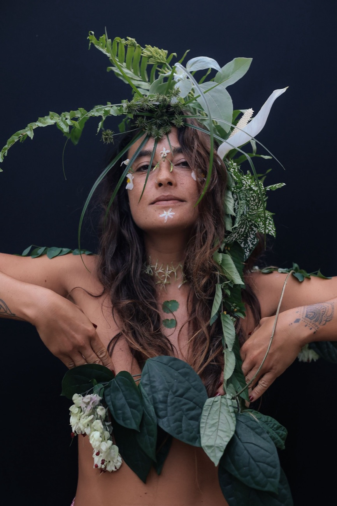
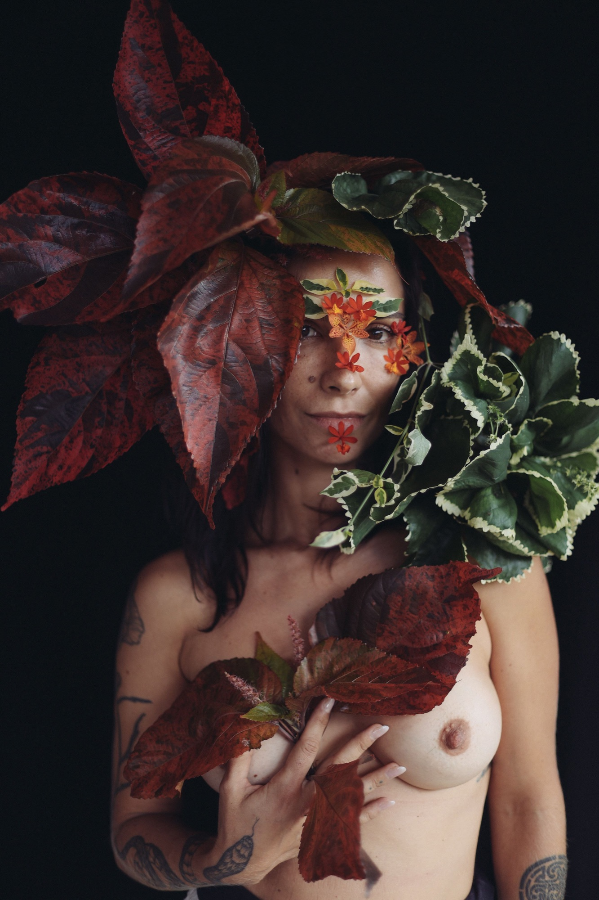
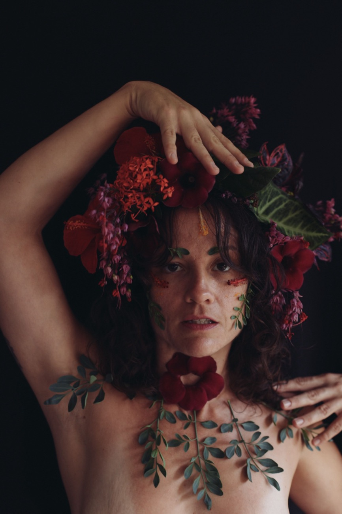
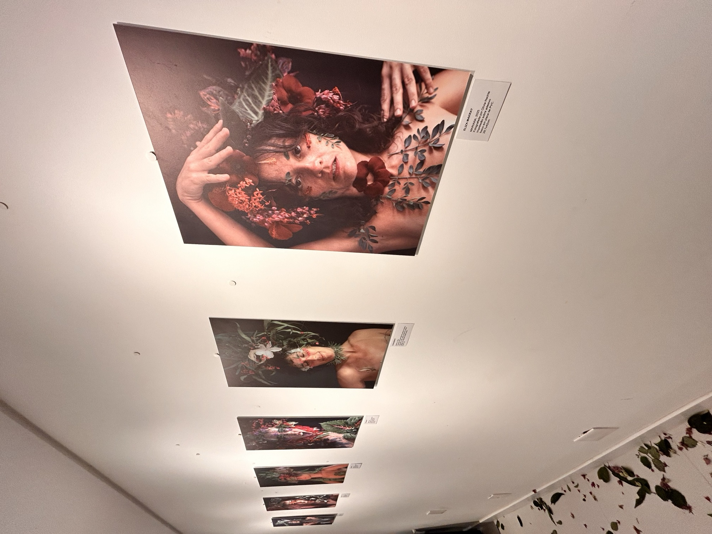
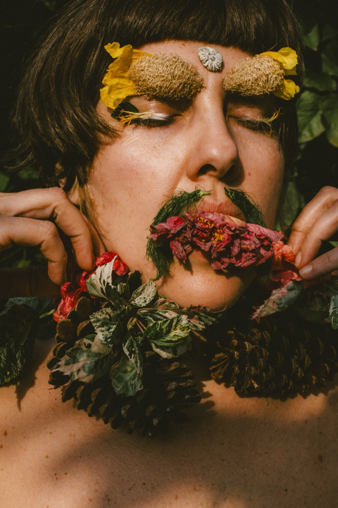
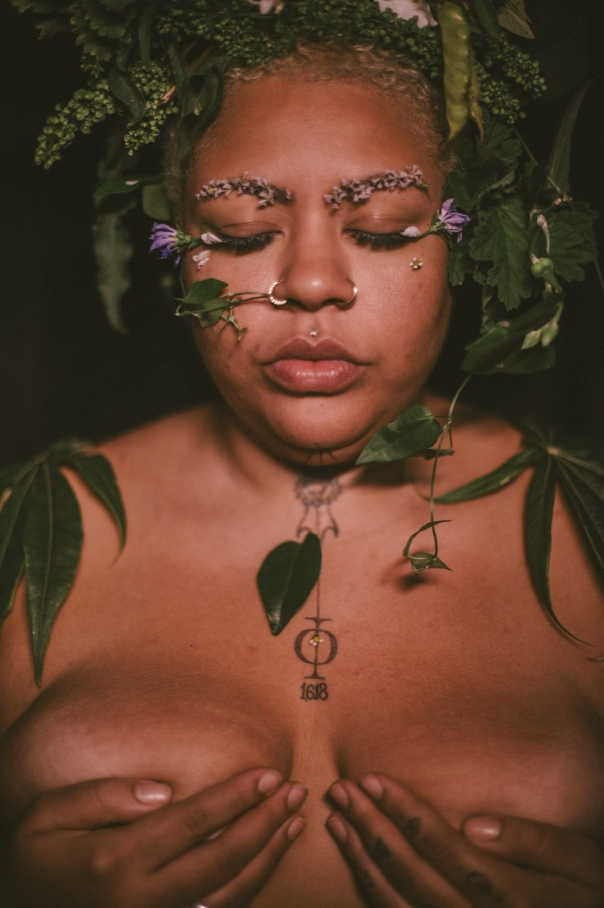
Ervas Daninhas
A série, idealizada pela artista multidisciplinar Eliza Makray, entrelaça a definição das plantas daninhas com a manifestação das mulheres na sociedade, através de intervenções urbanas. A série foi criada a partir do resultado do projeto Musas em Retratos, no qual mulheres foram produzidas pela artista com plantas escolhidas especialmente para o ensaio e retratadas por diferentes fotógrafos.
A atual proposta enaltece as fotos indefinidas, que exalam mistério e presença de seres/plantas, sugerindo uma analogia entre mulheres e plantas extremamente resistentes e adaptáveis, também reconhecidas como "pragas a serem combatidas" pelo sistema vigente.
As fotos são impressas no formato de lambe-lambe e distribuídas em centros urbanos, buscando a democratização da arte, reflexões e críticas que abarcam conceitos relacionados a ecologia, sustentabilidade, biodiversidade, pluralidade, empoderamento feminino e ecofeminismo.

Alma Botânica
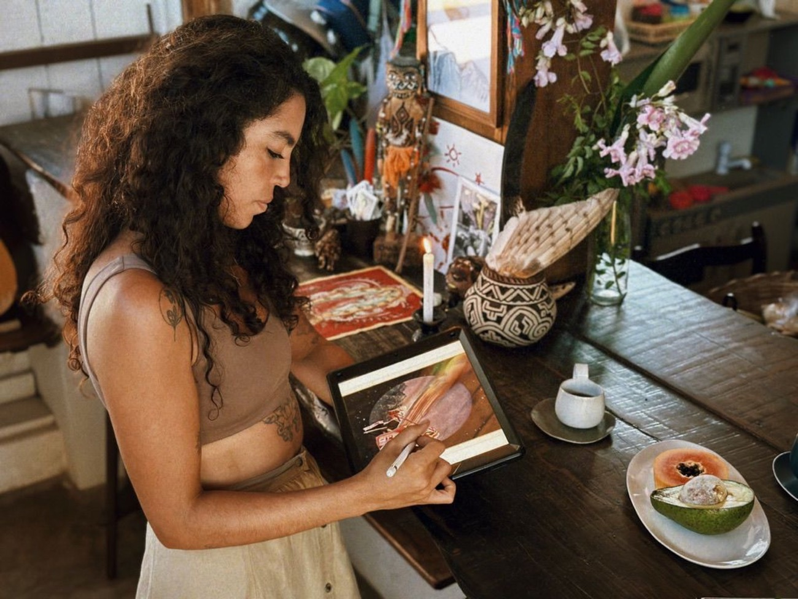
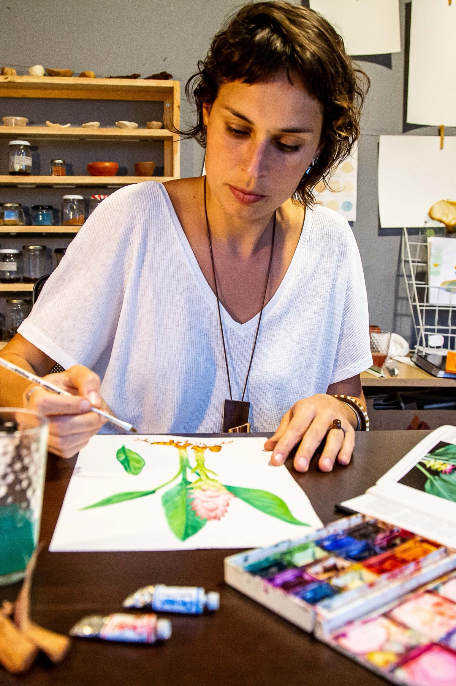
Alma Botânica é uma colaboração entre as artistas Eliza Makray e Buia Fronza, que têm a arte botânica como tema essencial de suas produções artísticas.
Eliza entra com suas aquarelas botânicas e Buia com a elaboração de composições primorosas de artes botânicas que se tornam estampas de lindos produtos que buscam enaltecer a rica biodiversidade brasileira, o conhecimento das plantas medicinais e a valorização dos saberes que nos reconectam com a natureza.
Visitar a loja @alma.botanica8Ciranda das Ervas
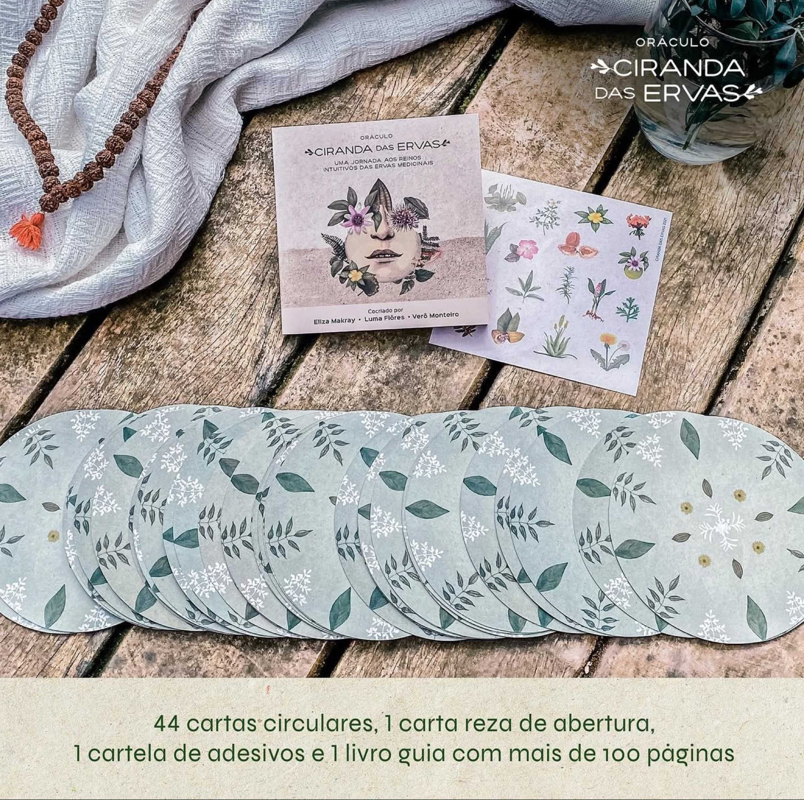
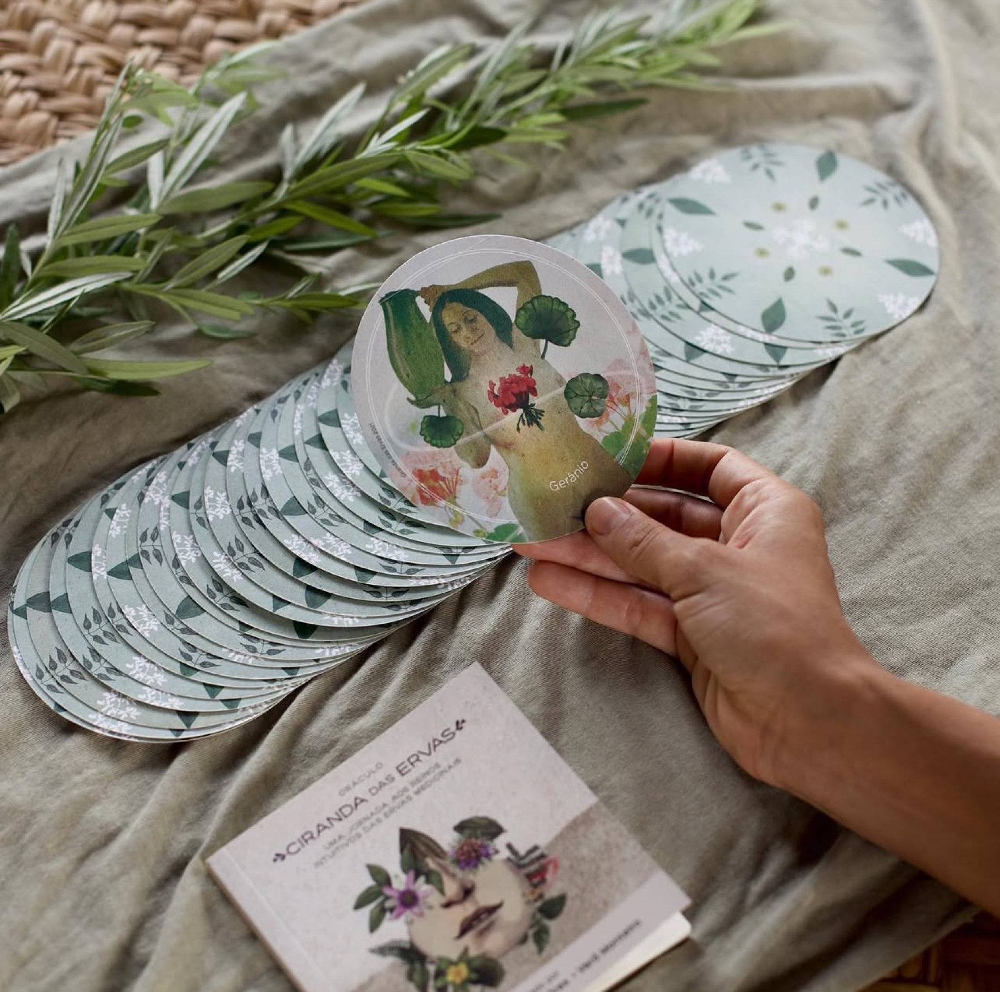
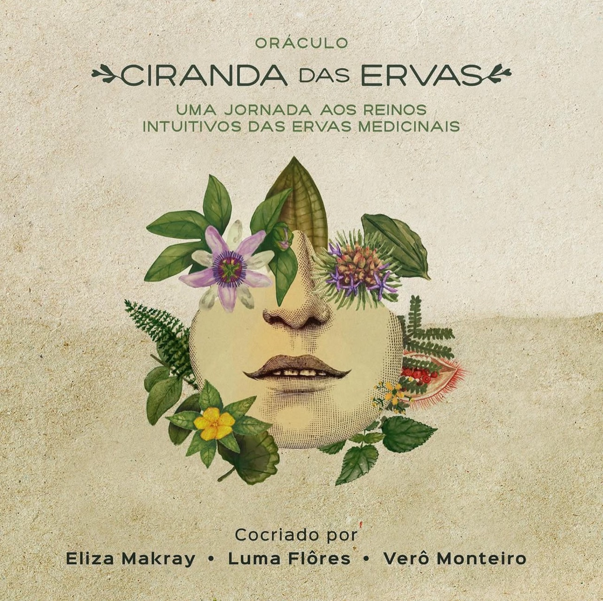
A Ciranda das Ervas é um oráculo de ervas medicinais criada com o propósito de apoiar na jornada do autoconhecimento, proporcionando um campo de aprendizagem sobre as plantas através das suas próprias percepções, com autonomia e autorresponsabilidade.
São 44 cartas circulares recheadas de símbolos que representam a essência de cada uma das plantas, 1 carta reza de abertura, 1 cartela de adesivos ilustrados e 1 livro-guia com mais de 100 páginas, no qual você encontrará instruções para sintonizar-se com as Cartas da Ciranda e com a sua guia interior.
As interpretações de cada carta incluem um poema, nome científico e popular, reflexão, afirmação, os 4 elementos, chakras, propriedades medicinais e contraindicações.
Conhecer o oráculo